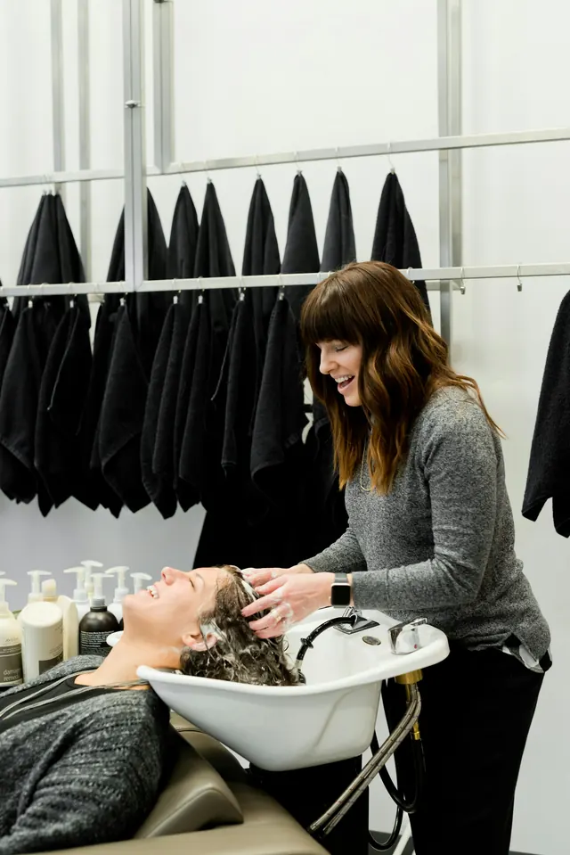

Helena Vasques
Dezoito anos de cadeira. Abriu o Lume depois de passar por salões grandes e sentir falta de tempo para conversar com quem estava sentado.
- Faz
- Coloração, Mechas e balayage, Corte, Escova
- Atende
- terça a sábado
Equipe
Cada uma atende em dias diferentes, por isso o calendário muda conforme você escolhe com quem quer sentar. Perfis fictícios, escritos para o projeto.
Dezoito anos de cadeira. Abriu o Lume depois de passar por salões grandes e sentir falta de tempo para conversar com quem estava sentado.
Aprendeu a cortar com o pai, barbeiro, e a olhar o cabelo seco antes do molhado. Pergunta como você penteia antes de pegar a tesoura.
Faz unhas e sobrancelhas há doze anos. Prefere o desenho que já existe a um desenho novo, e diz isso antes de começar.

O jeito de trabalhar
Todo atendimento começa com cinco minutos sem ferramenta na mão. É ali que a gente combina o que vai ser feito, quanto tempo leva e quanto custa.
Foto ilustrativa, não é a equipe fictícia.